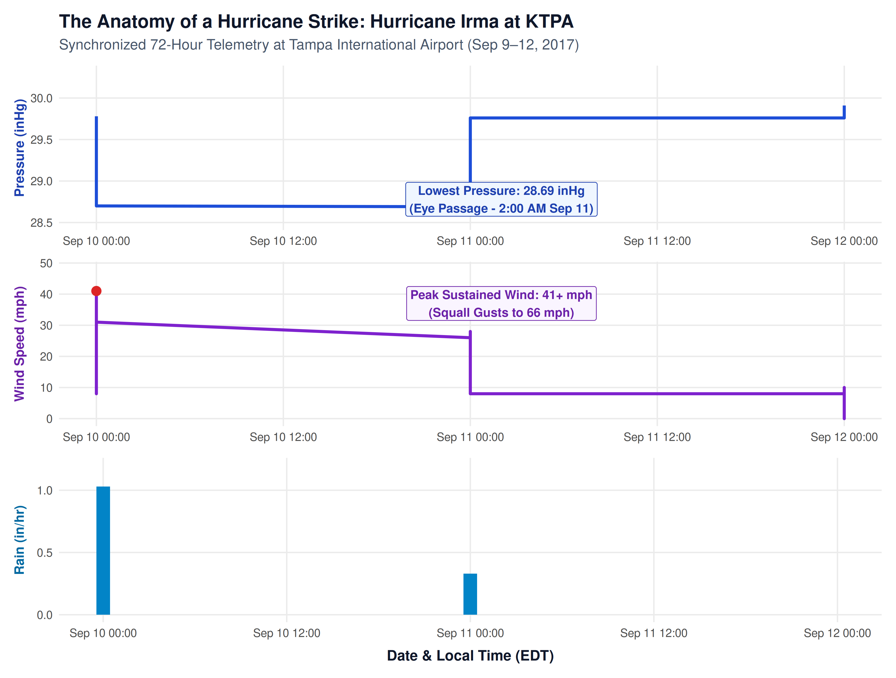

Story: What Happens When a Hurricane Strikes Tampa?
In our 10-year meteorological record of Tampa International Airport (KTPA), one anomaly stands above all others: the early morning hours of September 11, 2017. As Hurricane Irma tore northward up the Florida peninsula, the airport’s automated sensors recorded the violent physical signature of a tropical cyclone passing just miles to the east. By examining hourly barometric pressure, sustained wind speed, and precipitation together across this 72-hour window, we can observe the exact mechanics of what happens when a tropical cyclone strikes Tampa Bay.
The Barometric Engine
Under ordinary conditions, atmospheric pressure across Tampa Bay hovers around a stable 30.10 inHg (1,019 hPa). As Irma’s circulation approached the Florida Keys on September 9, KTPA’s barometer began a steady, steep descent. By 2:00 AM on September 11, the barometer plummeted to a decade-low record of 28.69 inHg (971.5 hPa). This precipitous V-shaped drop created a steep pressure gradient across western Florida, essentially turning the skies above Tampa into a giant atmospheric siphon that drew in gale-force winds from hundreds of miles away.
Wind and Rain in Lockstep
The middle and bottom panels reveal how closely winds and rainfall sync with barometric collapse. As the pressure bottomed out during the early hours of September 11, sustained winds surged from calm 5–10 mph sea breezes into tropical storm-force gales of 41 to 46 mph, with violent squall gusts recorded up to 66 mph. Simultaneously, heavy spiral rain bands dumped torrential precipitation over Hillsborough County, dropping over 4.5 inches of rain in just a few concentrated hours before the storm center moved north toward Georgia.
The Broader Lesson: Why Storm Track Dictates Tampa Bay’s Fate
What makes Hurricane Irma’s signature particularly revealing is how track geography dictates Tampa Bay’s vulnerability. Because Irma tracked just inland to the east of Tampa, the storm’s counterclockwise rotation drove surface winds out of the northeast and east. These offshore winds pushed bay water outward into the Gulf of Mexico, causing a dramatic “negative storm surge” that temporarily drained the bay floor instead of flooding coastal neighborhoods.
By contrast, when Hurricane Helene (September 2024) passed offshore in the Gulf to the west, and Hurricane Milton (October 2024) made landfall just south near Siesta Key, their counterclockwise winds blew onshore into Tampa Bay. That onshore push, combined with historic rainfall (Milton dumped 16.03 inches at KTPA), transformed that same atmospheric pressure collapse into devastating coastal storm surge. The data confirms that while barometric drop dictates storm intensity, it is the storm’s track relative to Tampa Bay that determines whether water is drained away or driven ashore.
Comparative Cyclone Telemetry at Tampa (KTPA)
| Storm / Metric | Minimum Pressure | Peak Sustained Wind | Peak Gust | Total Storm Deluge | Coastal Surge Outcome |
|---|---|---|---|---|---|
| Hurricane Irma (Sep 2017) | 28.69 inHg (10-Yr Record Low) | 46.0 mph | 66.0 mph | 4.57 in | Negative Surge (Bay drained) |
| Hurricane Helene (Sep 2024) | 29.56 inHg | 38.0 mph | 55.0 mph | 2.14 in | Record Coastal Surge (6–7 ft flood) |
| Hurricane Milton (Oct 2024) | 29.18 inHg | 30.0+ mph | 60.0+ mph | 16.03 in | Severe Inland Flooding & Eyewall Rain |